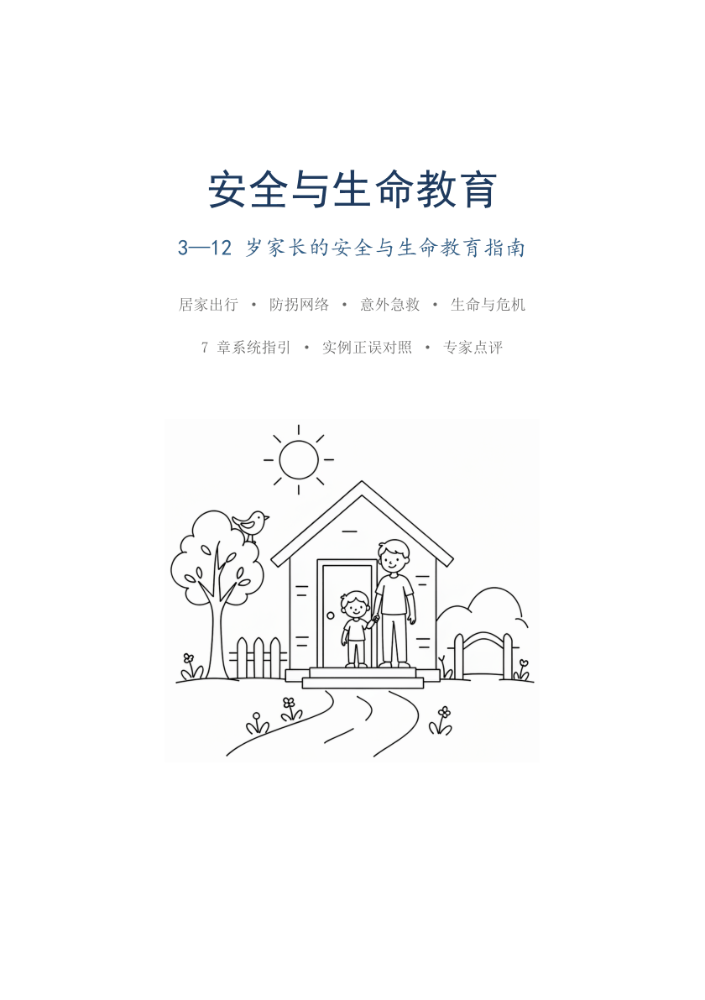
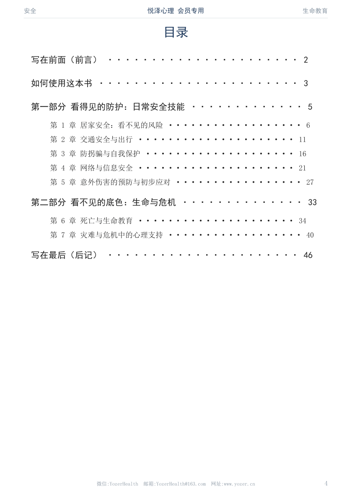
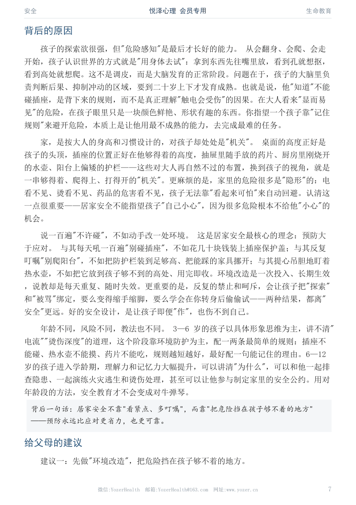
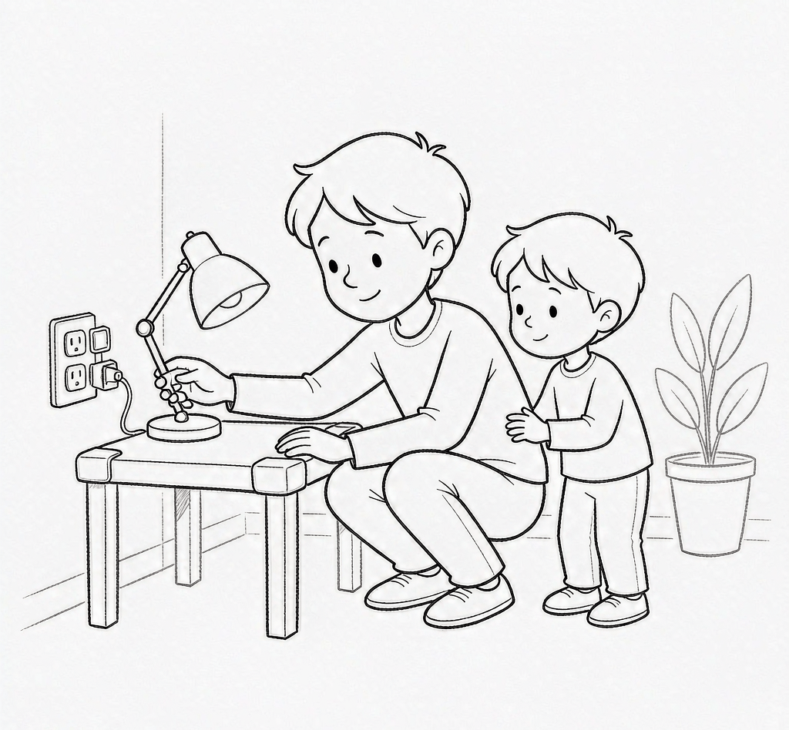

01
看得见的防护
5 章居家、交通出行、防拐骗、网络信息安全、意外伤害预防与初步应对——把风险想在前面。
——3—12 岁家长的安全与生命教育指南
为人父母最朴素的心愿，不过是孩子平安长大。这本书覆盖居家、交通、防拐、网络、意外伤害五类日常安全，也直面死亡与生命教育、灾难危机的心理支持——既有看得见的防护技能，也有看不见的生命底色。

封面与内页样张来自电子书原稿
翻开这本书之前，先听听作者想说什么
为人父母，最朴素的心愿不过是：孩子平安长大。
可"平安"两个字，从来不是理所当然。家里的插座、阳台、热水壶，路上的车流、水中的暗流，网络上的陌生人，还有那些我们不愿多想的风险——意外伤害、拐骗、欺凌，乃至生老病死。世界既不处处危险，也不绝对安全；家长的责任，不是把孩子裹在真空里，而是帮他长出一套辨认风险、保护自己、从容应对的本领。
这本书把散落在各处的"安全"主题系统化，分成两大块：防护与生命态度。
前五章讲"防护"——居家、交通、防拐、网络、意外伤害。这些是看得见的安全技能：插座不能碰、过马路要看车、不给陌生人开门、不轻信网友、烫伤了先冲冷水。它们是可以教、可以练、可以形成习惯的。本书强调"预防大于应对"，更强调把安全规则变成孩子的本能，而不是靠一遍遍的禁止和恐吓。
后两章讲"生命态度"——死亡与生命教育、灾难与危机中的心理支持。这些内容常被忽视，却意义深远。回避死亡，并不会让孩子少一点悲伤；恰恰是坦诚而温和的谈论，才能帮他理解生命的有限与珍贵。而面对灾难与危机，孩子最需要的，除了避险知识，还有一个能稳住他的大人——大人的镇定，就是孩子的安全感。
有三个观念，贯穿全书，想先讲在前面。
第一，安全教育的目标不是制造恐惧，而是建立能力。常年用"再乱跑就让警察抓走""掉下去就没命了"来吓孩子，只会让他要么过度胆小、要么对警告麻木。真正有效的安全教育，是告诉孩子"怎么做才安全"，并带他反复练习，直到成为本能。恐惧让人僵住，能力让人从容。
第二，把规则讲清"为什么"，孩子才愿意遵守。"不许碰插座"不如"插座里有电，碰了会受伤，我们只用这边的插头"；"不能跟陌生人走"不如"如果有人说'你妈妈让我来接你'，我们要先给妈妈打电话确认"。孩子理解了规则背后的道理，才知道在规则覆盖不到的新情境里该怎么办。
第三，生命教育的核心是"珍惜"，不是"可怕"。谈死亡、谈意外，是为了让孩子懂得生命的宝贵、懂得关心自己和他人，而不是让他整天担惊受怕。请用平静、温暖、诚实的方式谈这些——孩子会从你这里学到：生命值得敬畏，失去值得哀悼，而被爱着的人，永远可以互相支撑。
愿每一个孩子，都能在被保护中学会保护自己，在懂得分别与失去之后，更加热爱生活、珍惜生命。
按“看得见的防护—看不见的底色”两部分编排，先教技能，再谈生命
居家、交通出行、防拐骗、网络信息安全、意外伤害预防与初步应对——把风险想在前面。
死亡与生命教育、灾难与危机中的心理支持——孩子终会面对失去，家长需要提前准备。
统一的章节结构，先讲清风险，再给出可以照着做的应对方法
场景化开场，让你觉得“这说的就是我家孩子”
讲清行为背后的心理与发育规律，不焦虑不指责
每条配一个实例情景，含错误示范与正确示范
点破常见误区，避免“越管越糟”
从专业角度收束，讲清原理与边界
7 章 · 附真实页码 · 点击上方按钮可快速跳转试读
以下为第 1 章完整节选，体验“场景 + 原因 + 建议 + 示范 + 点评”的编排
周末下午，妈妈在厨房炒菜，两岁的多多在客厅"探险"。他先是把小凳子挪到电视柜前，踩上去够那个亮晶晶的插座孔，被爸爸一把抱下来；转眼又爬上餐桌，伸手去够刚烧开、还冒着热气的水壶。"多多！烫！"妈妈一个箭步冲过来，心提到了嗓子眼。晚饭前，奶奶发现孩子嘴里含着两颗花花绿绿的药片，以为是糖豆。"多多，这个是糖吗？""奶奶，甜甜的！"一家人瞬间慌成一团，翻说明书、查颜色，最后确认只是维生素软糖，才长长松了口气。
这样的惊魂时刻，几乎每个有幼儿的家庭都经历过。孩子会走路以后，家在他眼里不再是"大人的家"，而是一座巨大的探险乐园：插座孔像神秘的小洞，抽屉像藏宝箱，阳台上的花盆像能攀爬的台阶，厨房里的热水壶、菜刀、药品，全都散发着"让我摸一摸"的魔力。还有更多不易察觉的风险：随手搭在沙发上的塑料袋，可能变成套在头上的"面具"；没固定的书柜、五斗柜，可能在他攀爬时轰然倾倒；湿滑的浴室地砖，让跑跳的孩子一跤摔下去；散落的纽扣电池、硬币、小珠子，随时可能被当成糖豆吞进肚里。临床与统计观察都提示，儿童意外伤害最高发的场所，恰恰是最让人放松警惕的"自己家"——因为熟悉，所以松懈；因为松懈，所以危险。
如果你也每天在"别碰！""下来！""这个不能吃！"的循环里身心俱疲，请先放下自责：这不是你看护不周，而是孩子的探索欲跑在了危险感知能力前面，而我们的家，原本就不是按孩子的身高和好奇心设计的。你不是唯一一个"一转身就出事"的家长，这份疲惫本身，恰恰说明你已把孩子的安全放在心上。好消息是，居家安全恰恰是最能靠"环境改造"来掌控的一类风险——你不必做到分秒不离、句句叮嘱，只要把家改造一遍，就能挡住一大半意外。
孩子的探索欲很强，但"危险感知"是最后才长好的能力。从会翻身、会爬、会走开始，孩子认识世界的方式就是"用身体去试"：拿到东西先往嘴里放，看到孔就想抠，看到高处就想爬。这不是调皮，而是大脑发育的正常阶段。问题在于，孩子的大脑里负责判断后果、抑制冲动的区域，要到二十岁上下才发育成熟。也就是说，他"知道"不能碰插座，是背下来的规则，而不是真正理解"触电会受伤"的因果。在大人看来"显而易见"的危险，在孩子眼里只是一块颜色鲜艳、形状有趣的东西。你指望一个孩子靠"记住规则"来避开危险，本质上是让他用最不成熟的能力，去完成最难的任务。
家，是按大人的身高和习惯设计的，对孩子却处处是"机关"。桌面的高度正好是孩子的头顶，插座的位置正好在他够得着的高度，抽屉里随手放的药片、厨房里刚烧开的水壶、阳台上偏矮的护栏——这些对大人再自然不过的布置，换到孩子的视角，就是一串够得着、爬得上、打得开的"机关"。更麻烦的是，家里的危险很多是"隐形"的：电看不见、烫看不见、药品的危害看不见，孩子无法靠"看起来可怕"来自动回避。认清这一点很重要——居家安全不能指望孩子"自己小心"，因为很多危险根本不给他"小心"的机会。
说一百遍"不许碰"，不如动手改一处环境。这是居家安全最核心的理念：预防大于应对。与其每天吼一百遍"别碰插座"，不如花几十块钱装上插座保护盖；与其反复叮嘱"别爬阳台"，不如把防护栏装到足够高、把能踩的家具挪开；与其提心吊胆地盯着热水壶，不如把它放到孩子够不到的高处、用完即收。环境改造是一次投入、长期生效，说教却是每天重复、随时失效。更重要的是，反复的禁止和呵斥，会让孩子把"探索"和"被骂"绑定，要么变得缩手缩脚，要么学会在你转身后偷偷试——两种结果，都离"安全"更远。好的安全设计，是让孩子即便"作"，也伤不到自己。
年龄不同，风险不同，教法也不同。3—6 岁的孩子以具体形象思维为主，讲不清"电流""烫伤深度"的道理，这个阶段靠环境防护为主，配一两条最简单的规则：插座不能碰、热水壶不能摸、药片不能吃，规则越短越好，最好配一句能记住的理由。6—12 岁的孩子进入学龄期，理解力和记忆力大幅提升，可以讲清"为什么"，可以和他一起排查隐患、一起演练火灾逃生和烫伤处理，甚至可以让他参与制定家里的安全公约。用对年龄段的方法，安全教育才不会变成对牛弹琴。
建议一：先做"环境改造"，把危险挡在孩子够不着的地方。
居家安全的第一原则，不是"盯紧孩子"，而是"改造环境"。下面这些改造花不了太多钱，却能挡住绝大多数意外：给插座装上保护盖，或换成带安全门的新插座；阳台、窗户装上足够高的防护栏，护栏间隙要小于孩子的头宽、栏杆竖向且不能踩踏，窗边不放能攀爬的桌椅床；药品、清洁剂、消毒液装进带锁的柜子，用完立刻收好，绝不放成"随手可拿"；热水壶、热汤锅放在灶台内侧或孩子够不到的高处，电线收纳好、不垂在桌边；刀具、剪刀进抽屉锁或高处，用完归位；塑料袋、保鲜膜、绳子收进孩子打不开的抽屉，避免套头窒息；给书柜、电视柜、五斗柜等高大家具加装防倾倒固定件、固定在墙上，防止孩子攀爬时被砸；纽扣电池、硬币、小珠子、磁力珠等小物件收好，谨防误吞。这些改造的本质，是把"靠人盯着"变成"靠设计兜底"。
建议二：按年龄讲安全，3—6 岁靠"环境 + 短规则"，6—12 岁靠"讲理 + 演练"。
不同年龄的孩子，能吃透的安全教育完全不同。3—6 岁的孩子，请把重心放在环境防护上，只教一两条最短、最具体的规则，并配上能听懂的理由：插座"有电，会咬手，不能碰"；热水壶"烫，会起泡，不能摸"；药片"不是糖，生病才吃，要问大人"。规则尽量用肯定句告诉孩子"可以怎么做"，比如"想喝水，叫妈妈帮你倒"。6—12 岁的孩子，可以讲清"为什么"——电流会伤害身体、烫伤会留疤、药品吃错会中毒；可以和他一起演练：火灾来了怎么弯腰捂口鼻逃生、烫伤了第一步做什么、家里突然断电怎么办。安全知识只有经过身体演练，才会变成关键时刻的本能。
建议三：带孩子一起做一次"家庭安全隐患排查"，让安全变成看得见的清单。
安全教育不该只是家长的独角戏。找一个周末，带着孩子"找茬"：蹲下来，用他的视线高度把家重新看一遍——这个高度，正是危险最容易藏身的地方。一边找一边讲"为什么"，孩子会记得格外牢。下面这张清单可以打印出来，逐项排查：
建议四：把用电、用火、用气变成习惯，并记住几条救命口诀。
用电、用火、用气，是居家安全里最需要"习惯化"的部分，也是一旦出事后果最严重的部分。日常要做到：湿手不碰电器和开关，电器用完拔插头，插线板不超负荷串联；打火机、火柴放在孩子拿不到的高处，教会孩子"看见火机叫大人，不自己玩"；燃气灶用完关总阀，厨房保持通风，最好安装燃气报警器和带熄火保护装置的灶具。在此基础上，全家记住四条最关键的应急口诀——触电先断电、烫伤先冲水、火灾弯腰捂口鼻逃生、误吞不催吐：
触电：不能直接用手拉人，先拉电闸或用干燥木棍挑开电线，再拨打 120。
烫伤：立刻用流动冷水冲，别涂牙膏酱油。
火灾：弯腰捂口鼻，走安全通道，不乘电梯，出门打 119。
误吞：不要催吐、不要手抠，立即就医并说清吞了什么。
这里只是记住口诀、建立第一反应；每种意外的完整处理步骤，第 5 章会逐一展开。无论哪种情况，初步处理后都要尽快就医或拨打 120，不能在家硬扛。
只靠嘴说"不许碰"，不改环境。环境不变，叮嘱再多次也会有失手的一刻，意外往往就发生在你"刚好没看着"的那几秒。
用吓唬管教。"碰插座会被电死""爬阳台摔死"这类话，只会让孩子要么过度恐惧、要么对警告麻木，还埋下"出事不敢告诉大人"的隐患。
装了防护就撒手不管。防护栏、保护盖会老化松动，孩子也在长大、能力在变强。要定期检查，随着孩子长高及时调整措施。
以为孩子"懂事"了就放松。记住规则不等于做得到——冲动是孩子的天性，"知道"和"做到"之间隔着整个童年。
把药品、热水、刀具随手放。"就一会儿""就在旁边"是意外最常见的开场。药品用完立刻上锁，热源用完立刻收，刀具用完立刻归位。
自行处理严重伤害。大面积烫伤、深度触电、疑似误吞异物或药物，不要在家"观察看看"，要第一时间就医或拨打 120。
居家安全的本质，是用成人的预见，替孩子补上他还没有长好的判断力。孩子不是"不小心"，他只是在用这个年龄唯一会的方式探索世界；而我们的责任，不是把他关进无菌室，而是让这个家在"他闹腾"的时候依然安全。一个装了防护栏、锁了药柜、固定了家具、热水放高处的家，既给了孩子自由探索的空间，也给了家长不必分秒紧盯的从容——这才是"预防大于应对"的真正意义：不是少一分爱，而是多一分聪明。
也要提醒：绝大多数居家意外，靠环境改造和妥善看护就能避免，但一旦发生，正确处理同样关键。请记住：触电先断电再施救，烫伤按"冲、脱、泡、盖、送"初步处理，火灾弯腰捂口鼻逃生；这些只是初步常识，遇到严重触电、大面积或深度烫伤、疑似误吞异物或药物、火灾等紧急情况，请立即拨打 120 或 119 并尽快就医，不要在家自行观察或用偏方处理。把专业的事交给专业的人，是家长最清醒的判断。
—— 以上为节选，完整内容见电子书 ——
真实排版预览 · A5 竖版 · 黑白简笔画插图



图片为文档内嵌样张，仅作版式展示
| 项目 | 说明 |
|---|---|
| 书名 | 安全与生命教育 |
| 副标题 | 3—12 岁家长的安全与生命教育指南 |
| 适读年龄 | 3—12 岁 |
| 篇幅 | 7 章 · 约 3.9 万字 · 46 页 |
| 版本 | A5 版（148×210mm） |
| 格式 | PDF 电子书 |
| 插图 | 8 张黑白简笔画题图 |
| 结构 | 两部分 · 每章五步 · 实例正误对照 |